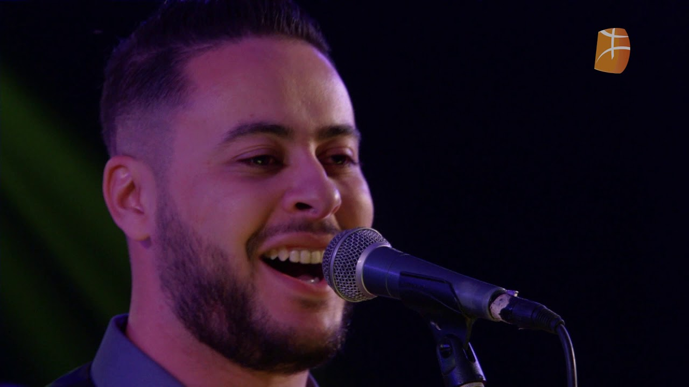
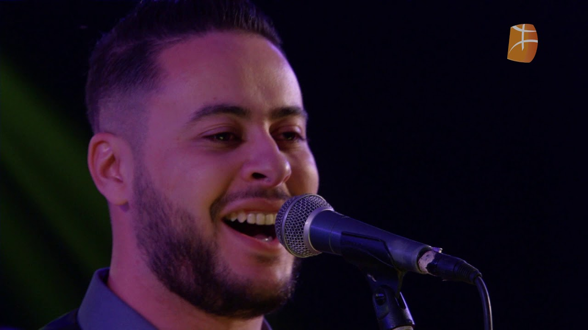
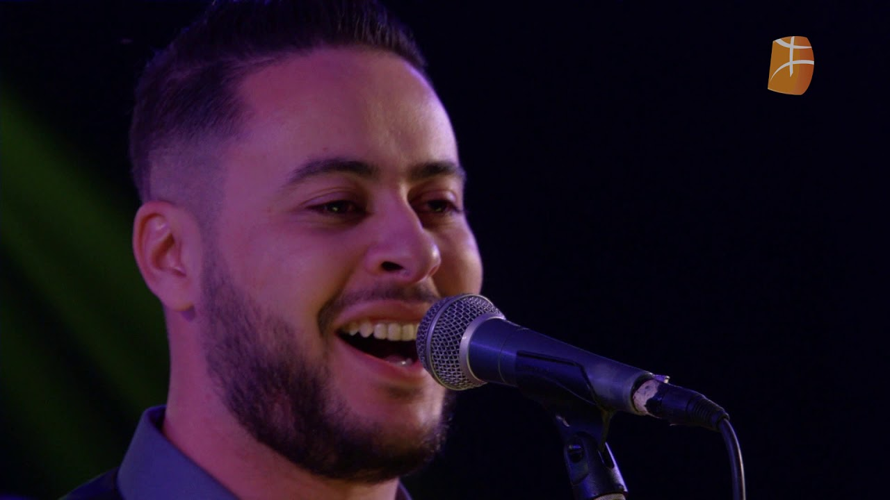

La musique de Rezki Ouali puise dans les racines kabyles tout en parlant aux âmes modernes.

Rezki Ouali est une figure montante de la musique kabyle moderne. Avec une voix chaleureuse et des compositions qui marient tradition et modernité, il s'impose comme un artiste unique, apprécié par un public large et diversifié.
Pour en savoir plus sur son parcours et ses inspirations, consultez la page biographie.